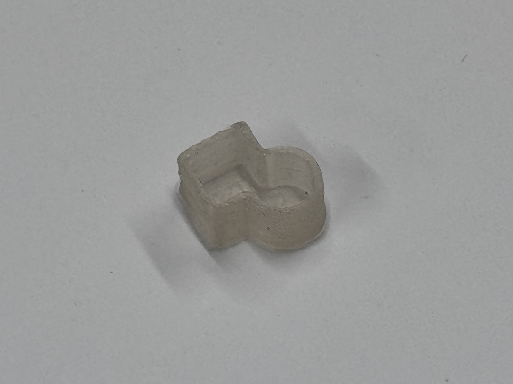
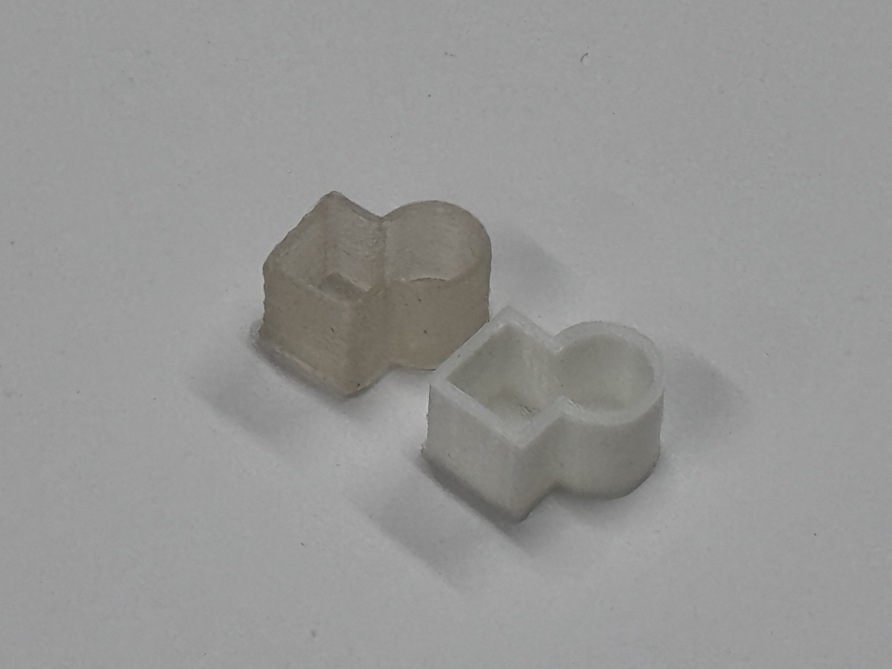
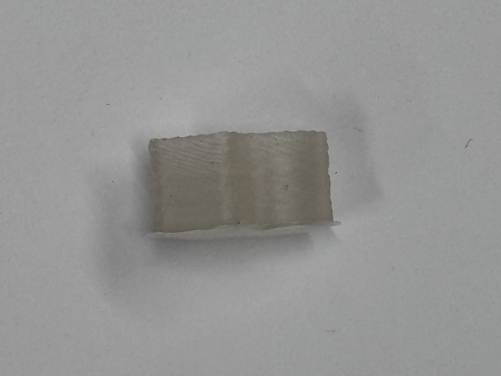
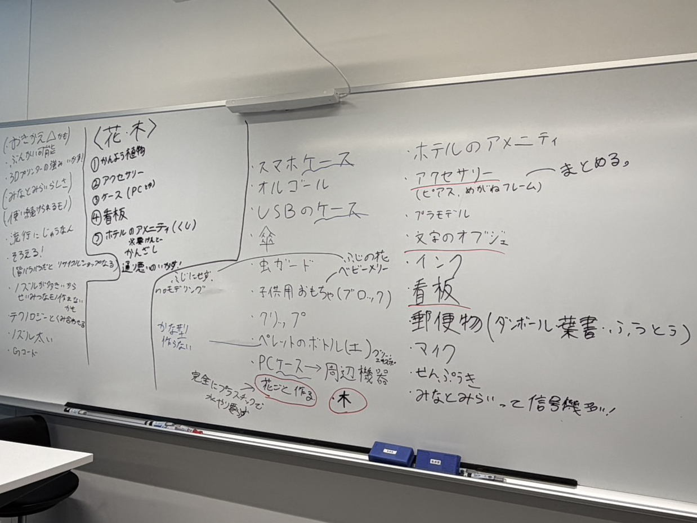
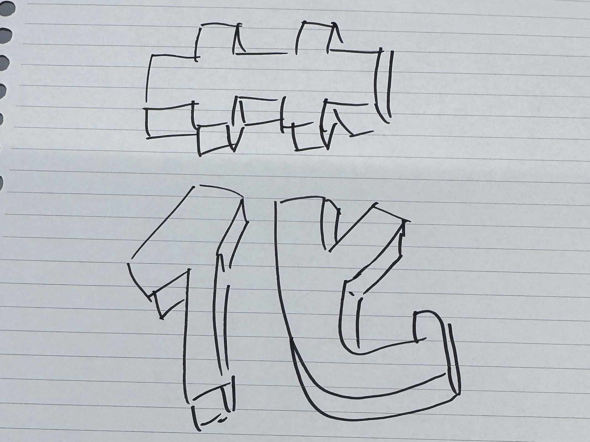
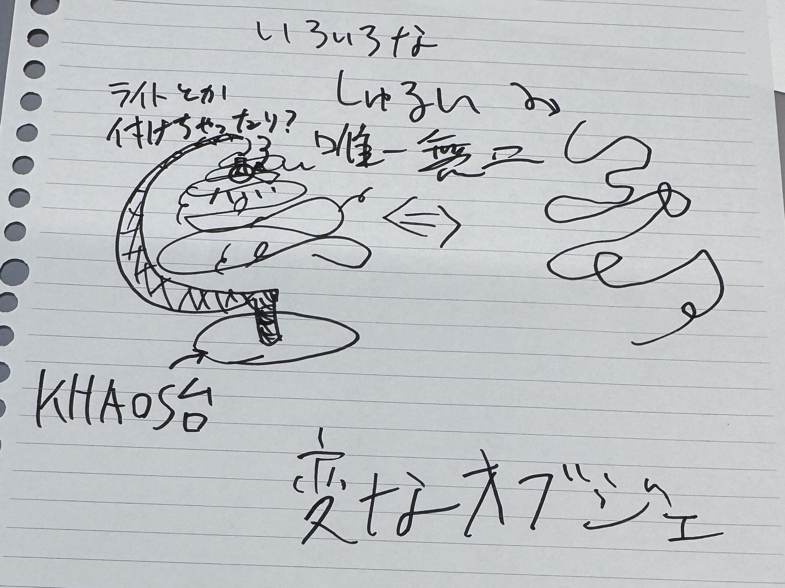
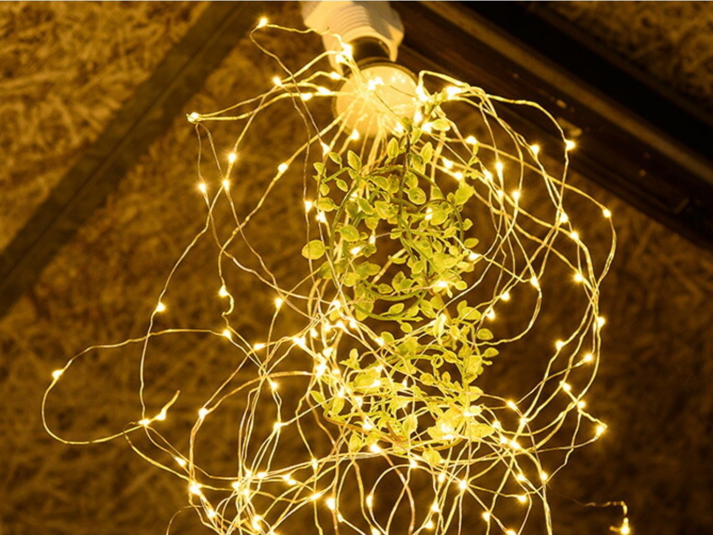
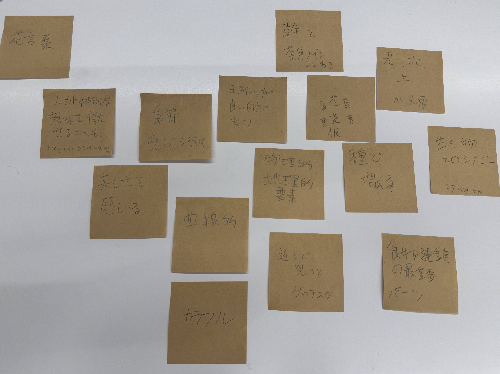
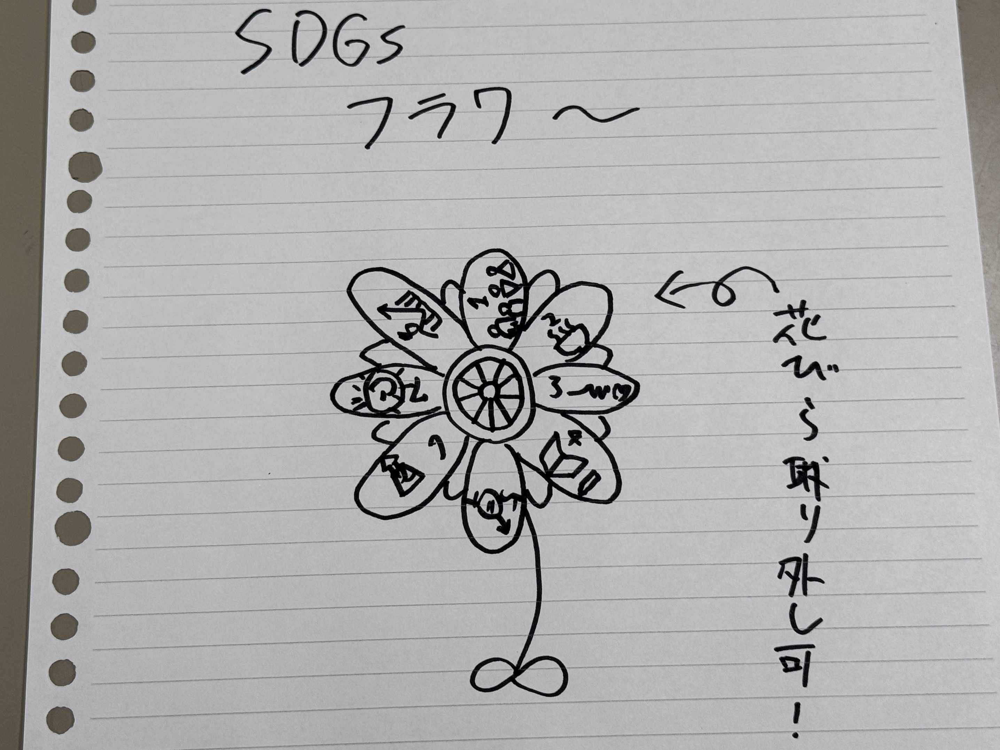
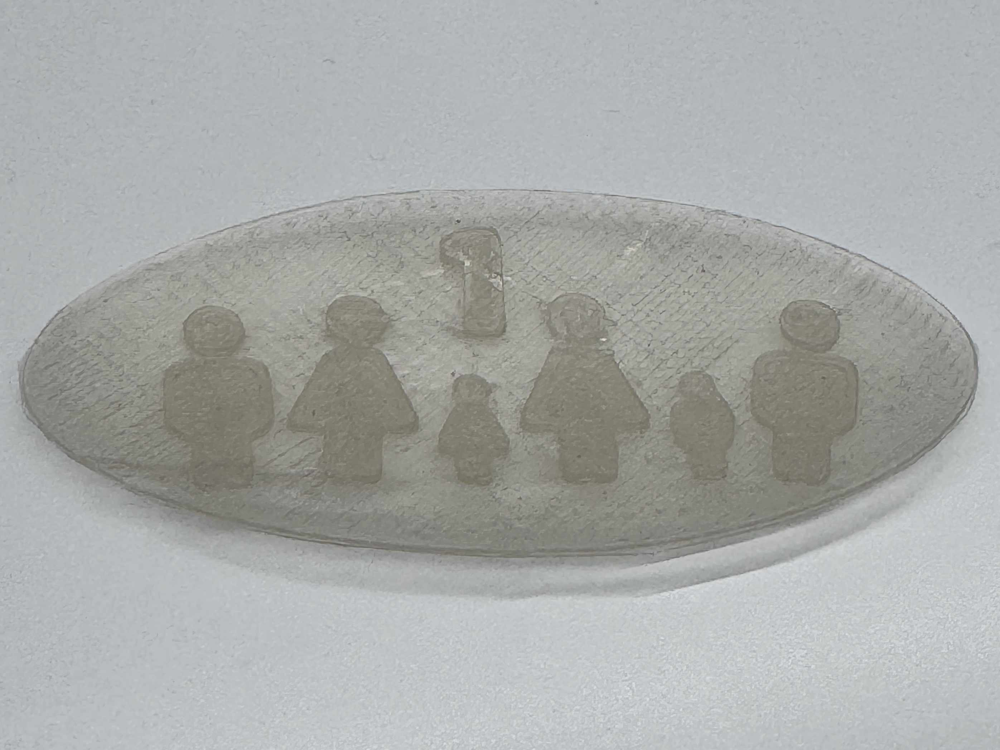

中間報告-1
2026/06/19
【ペレット式3Dプリンターに慣れる】
制作物が何であれペレット式の3Dプリンターを使う必要があるため、それがどんな特性なのかを理解すべく、こんなものを作ってみました！

これは、立方体と円柱を組み合わせた箱型の立体物です。
出力したものが小さかったのもあってか、特に問題なくできました！
このプリンターのノズル径が1mmなのですが、図らずも側面が1mmの
厚さだったために、上手く出力できたのかもしれません。
また、ペレット式の3Dプリンターで出力する前に、テストとして
フィラメント式の3Dプリンターでも出力しています。
↓比較

また、ペレット式の3Dプリンターでは制作物の底面が反ってしまう
のですが、この立体物が小さすぎたためか反りはほとんど見られませんでした。

【テーマの設定】
今回のプロジェクトは、個人制作ではなくグループで共通のテーマを設定します！話し合いの結果、テーマは「花・木」に決定しました。
↓話し合いLog

なお、このテーマはあくまでもグループ制作物用なので、それとは別で個人でも
制作物を作る人もいます！
例：PCケースを作るmold氏↓
mold氏のdoyolab-HP
作成目標物について
【テーマに沿った制作物のアイデア共有】
テーマに沿うように制作物を作る都合上、アイデアが0の状態ではなかなか「これ！」というものが出てこないため、まずはアイデアをグループワークで出し合いました。
自分がこの時思いついたのは、「花」という漢字をそのまま立体物にしてしまおう！という
安直なアイデアです。

また、テーマ決定時に出した「ベビーメリー」から派生させて
吊るすオブジェ的なものも思いつきました。

参考画像

【アイデアの発散と収束】
せっかくのペレット式なのに、上記のアイデアでは納得できない！！ということで、改めて新しいアイデアを模索してみることにしました。
テーマが「花・木」と二つの要素があるため、とりあえず「花」に着目し
どんなイメージ（固定概念）があるかをポストイットに書き出してみました。

これを基に、「メッセージ性」のある花を作ろうと思いつきました！
また、このプロジェクトはサーキュラーエコノミーの発展も視野に入れている
プロジェクトのため、SDGsとも相性がいい！！ってことで、
こちら。

SDGsフラワー！！
・・・・・・・
はい。
これまたすんごい安直なアイデアでしたが、とりあえずモノを作ってみようってことで

これです。
１番の「貧困をなくそう」の見た目をそのまま花びらのパーツに印刷しただけです。
・・・・・・・
「いや、クソつまらねえ！！！！！！」
自分でもびっくりするくらいつまらないアイデアで、これ以上進めたところで納得できる
作品を作れないと判断したため、これも没に。
【カメレオン】
グループでの話し合い中に出したアイデアや、個人で考えたアイデアに納得できないまま月日は流れ、どうするか悩んでいたのですが、ふと
「カメレオン」
というアイデアが浮かびました。
というのも、最近知人の紹介でマダガスカル専門店に行く機会があったのですが、
そこで見たカメレオンハンターの動画が印象に残っていたのが大きな理由だと思います。
考えてみると、作品の素材となるペレットはクリアファイルであるため、カメレオンの
体の色が変わるという特徴が、透明な素材を使うことで表現できるではありませんか！！！
そして何より、「カメレオン」は自分が納得のできるアイデアです。
というわけで、長くなりましたが、ついにアイデアを決めることができました！！
後はもう手を動かしまくるのみ！！
今までモデリングにはFusion360を使っていましたが、制作の相性問題の観点から、
今回はBlenderを使うことにしました！
複雑な造形は初めてで、Blender自体少ししか触れてきていないので、
難しい挑戦となりそうですが、気合いで乗り切って見せる！！！